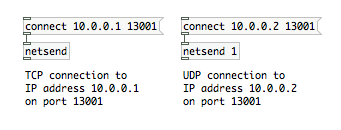
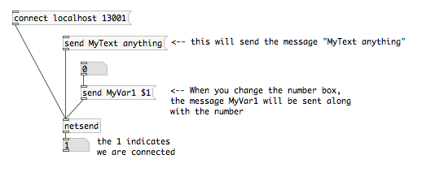
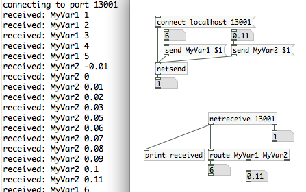

[netsend] and [netreceive]
The [netsend] and [netreceive] objects are for transmitting and receiving messages over a network. An example use would be an installation where two computers are needed to communicate with each other to lighten the processing load. Because these two objects are intrinsically linked, we will talk about them together.
[netsend]
Creating an instance of [netsend] will open a network socket to another computer. Both TCP and UDP protocols are supported. [netsend] defaults to a TCP connection. You can change to UDP adding the argument 1 when creating the object. You will need to supply an IP address or hostname, of a host machine, as well as a port number. You can provide this information with the message "connect IP_address port_number".

The outlet on the [netsend] object indicates if it is connected to a remote computer or not. It will report 1 if it is connected, 0 if it is disconnected.
Once you have established a connection, you may send messages. You must prepend all messages with the word "send". For establishing a stable protocol, it is advisable to name each message being sent.

You can terminate a connection with the message "disconnect".
The messages are sent using the FUDI protocol. If we were to examine one of the messages sent above, it would appear like this:
MyText anything;
[netreceive]
Creating an instance of [netreceive] will open a network listener socket on the local computer. Just like [netsend], UDP and TCP are supported. [netreceive] takes one argument, the port it is listening on. An optional second argument will change the object from TCP to UDP. [netsend] has two outlets when it is listening for TCP, and one when listening for UDP. The left outlet prints out any data it has received. The right outlet reports the number of active connections.
An example with multiple arguments is below.

Connecting with other applications
[netsend]/[netreceive] can communicate with other networked applications that communiate via TCP and UDP. Max/MSP has a pair of objects with the same name created by Olaf Matthes. A PHP script connecting to a UDP netreceive object on port 13000 would look like this :
$socket = socket_create(AF_INET, SOCK_DGRAM, SOL_UDP);
$result = socket_connect($socket, $address, 13001);
socket_send($socket, $data, strlen($data), MSG_DONTROUTE);